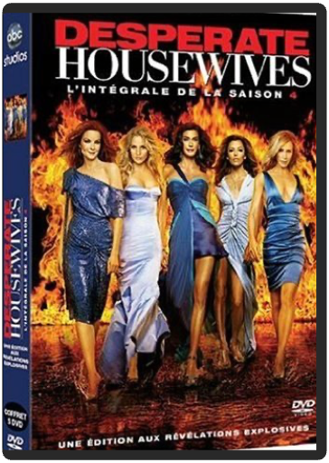

desperate housewives, saison 1 desperate housewives, saison 1  Qui aurait parié sur le succès d’une fiction s’intéressant au quotidien de ménagères quadra dans un quartier BCBG de la middle class ? Pourtant, dès les premières diffusions, Desperate housewives s’est hissé au top 5 des shows télés les plus regardés outre-atlantique. Ni série policière, ni sitcom, ni drame, la série regroupe le meilleur de chaque style pour l’ancrer dans une réalité tout ce qu’il y a de plus ordinaire. A partir d’un démarrage aussi mystérieux que tragique, Desperate housewives va s’intéresser, à l’aide de scénarii d’une précision chirurgicale, aux femmes de Wisteria Lane. Casting irréprochable, dialogues jubilatoires, rythme trépidant, la série livre un portrait social entre gaudriole et vitriol, glamour et linge sale, l’un des plus jouissifs qu’il ait été donné de voir depuis longtemps. Les suppléments, disséminés au gré des 6 DVD, foisonnent : commentaire audio d’une richesse faramineuse pour six épisodes, commentaire par les actrices de leur scène préférée, scènes coupées, bêtisier, une parodie à mourir de rire avec Oprah Winfrey, visite des décors, retours sur les costumes, documentaire sur les coulisses de la série…Largement de quoi patienter en attendant la saison 2. www.ecranlarge.com desperate housewives, saison 4 La nuit suivant le mariage de Gabrielle, les habitants de Wisteria Lane sont réveillés par l'arrivée des secours suite à la fausse tentative de suicide d'Eddie. Un mois plus tard, alors que Susan a des doutes sur le bonheur de son mari, que Lynette cache toujours son cancer à ses amis, que Gaby espère encore le retour de Carlos, et que Bree continue de simuler une grossesse, d'anciens résidents de Wisteria Lane reviennent s'y installer, amenant avec eux une lourde cargaison de secrets?  desperate housewives, saison 6 desperate housewives, saison 6 Wisteria Lane est un lieu paisible où les habitants semblent mener une vie heureuse... en apparence seulement ! Car en y regardant de plus près, on découvre bien vite, dans l'intimité de chacun, que le bonheur n'est pas toujours au rendez-vous. Et peu à peu, les secrets remontent inévitablement à la surface, risquant de faire voler en éclat le vernis lisse de leur tranquille existence...  desperate housewives, saison 7 desperate housewives, saison 7 Mary Alice Young adore observer ses amis et sa famille, elle n'y consacre pas sa vie...mais sa mort. En effet, un beau jour, dans sa coquette maison plantée au coeur d'un charmant quartier résidentiel, Mary Alice a décidé de mettre fin à ses jours. Désormais, de son point de vue imprenable, elle commente la vie de sa famille, de ses amis et de ses voisins. Aucun des petits secrets plus ou moins avouables de cette communauté apparemment sans histoire n'échappe désormais à Mary Alice.  desperate housewives, saison 8 desperate housewives, saison 8 Mary Alice Young adore observer ses amis et sa famille, elle n'y consacre pas sa vie... mais sa mort. En effet, un beau jour, dans sa coquette maison plantée au coeur d'un charmant quartier résidentiel, Mary Alice a décidé de mettre fin à ses jours. Désormais, de son point de vue imprenable, elle commente la vie de sa famille, de ses amis et de ses voisins. Aucun des petits secrets plus ou moins avouables de cette communauté apparemment sans histoire n'échappe désormais à Mary Alice... draculafrancis ford coppola Attention, chef-d'oeuvre ! En ressuscitant le mythe de Dracula et en adaptant pratiquement à la lettre le roman de Bram Stoker, Francis Ford Coppola réussit un grand film romantique où l'amour prend le pas sur l'horreur. Bien sûr, il respecte la panoplie du parfait vampire. Vlad l'empaleur se transforme en loup, en chauve-souris, en brume et se nourrit de sang. Mais le réalisateur met en avant la très belle histoire d'amour qui lie notre suceur de sang préféré à la très belle Mina, portrait craché de sa défunte épouse. Gary Oldman se donne à fond et réussit une remarquable interprétation du seigneur des ténèbres. À ses côtés, Winona Ryder charme tous les hommes qui gravitent autour d'elle. Et on les comprend. Du grand cinéma. —Marc Maesen |


 Made with Delicious Library
Made with Delicious LibraryNancy, State zipflap congrotus delicious library Thomas, Julien